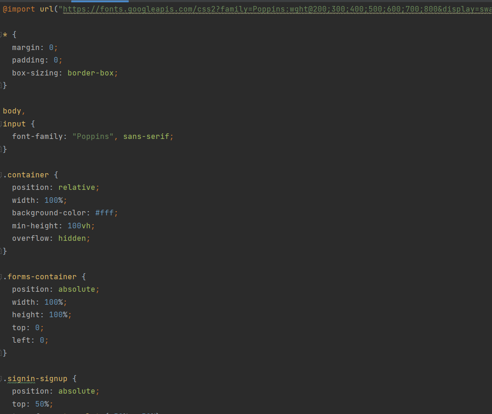
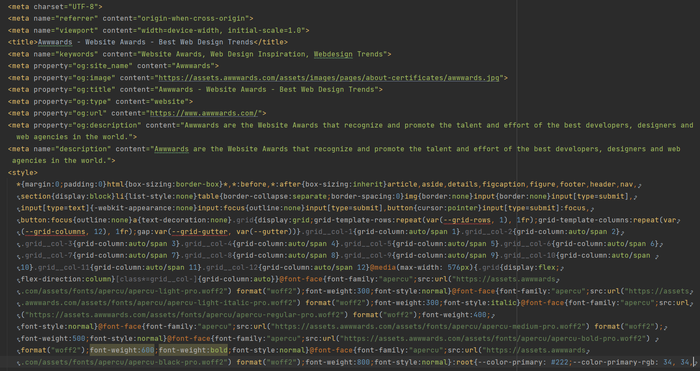
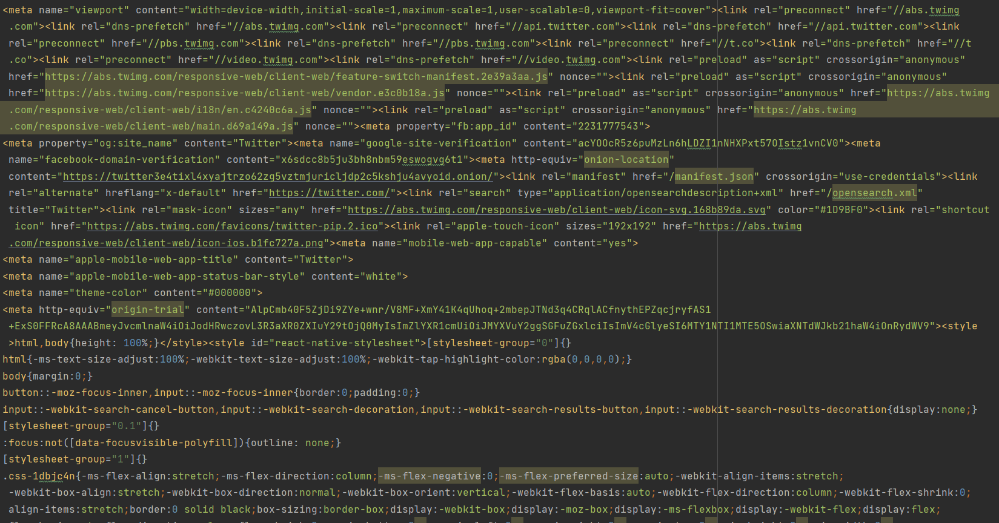

Explore
Explore
优秀案例



这是一个优秀的响应式登陆界面的展示，其利用html+css+js的方法实现了注册页面的功能和动画，实现了登录，注册，登录页与注册页动画切换，检查邮箱填写是否正确的功能.这是一个优秀的响应式登陆界面的展示，其利用html+css+js的方法实现了注册页面的功能和动画，实现了登录，注册，登录页与注册页动画切换，检查邮箱填写是否正确的功能.这是一个优秀的响应式登陆界面的展示，其利用html+css+js的方法实现了注册页面的功能和动画，实现了登录，注册，登录页与注册页动画切换，检查邮箱填写是否正确的功能.这是一个优秀的响应式登陆界面的展示，其利用html+css+js的方法实现了注册页面的功能和动画，实现了登录，注册，登录页与注册页动画切换，检查邮箱填写是否正确的功能.这是一个优秀的响应式登陆界面的展示，其利用html+css+js的方法实现了注册页面的功能和动画，实现了登录，注册，登录页与注册页动画切换，检查邮箱填写是否正确的功能.这是一个优秀的响应式登陆界面的展示，其利用html+css+js的方法实现了注册页面的功能和动画，实现了登录，注册，登录页与注册页动画切换，检查邮箱填写是否正确的功能.这是一个优秀的响应式登陆界面的展示，其利用html+css+js的方法实现了注册页面的功能和动画，实现了登录，注册，登录页与注册页动画切换，检查邮箱填写是否正确的功能.这是一个优秀的响应式登陆界面的展示，其利用html+css+js的方法实现了注册页面的功能和动画，实现了登录，注册，登录页与注册页动画切换，检查邮箱填写是否正确的功能